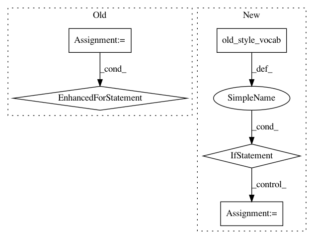

90e5b974a7173ab0bba0990a690e32f25f5b725a,tools/embeddings_to_torch.py,,get_vocabs,#Any#,13
Before Change
// the vocab object is a list of tuple (name, torchtext.Vocab)
// we iterate over this list and associate vocabularies based on the name
for vocab in vocabs:
if vocab[0] == "src":
enc_vocab = vocab[1]
if vocab[0] == "tgt":
dec_vocab = vocab[1]
assert enc_vocab is not None and dec_vocab is not None
logger.info("From: %s" % dict_file)
logger.info("\t* source vocab: %d words" % len(enc_vocab))
After Change
def get_vocabs(dict_path):
fields = torch.load(dict_path)
if old_style_vocab(fields):
enc_vocab = next((v for n, v in fields if n == "src"), None)
dec_vocab = next((v for n, v in fields if n == "tgt"), None)
else:
enc_vocab = fields["src"][0][1].vocab
dec_vocab = fields["tgt"][0][1].vocab
logger.info("From: %s" % dict_path)
logger.info("\t* source vocab: %d words" % len(enc_vocab))
logger.info("\t* target vocab: %d words" % len(dec_vocab))
In pattern: SUPERPATTERN
Frequency: 3
Non-data size: 5
Instances
Project Name: OpenNMT/OpenNMT-py
Commit Name: 90e5b974a7173ab0bba0990a690e32f25f5b725a
Time: 2019-01-14
Author: benzurdopeters@gmail.com
File Name: tools/embeddings_to_torch.py
Class Name:
Method Name: get_vocabs
Project Name: OpenNMT/OpenNMT-py
Commit Name: bc1351d47d9fe83bc6c7830a8563ddb874953ed4
Time: 2019-01-09
Author: benzurdopeters@gmail.com
File Name: onmt/train_single.py
Class Name:
Method Name: main
Project Name: OpenNMT/OpenNMT-py
Commit Name: 857e36921ab5ca51c919839ec0b6e87585160d0c
Time: 2019-02-14
Author: dylan.flaute@gmail.com
File Name: onmt/decoders/ensemble.py
Class Name:
Method Name: load_test_model